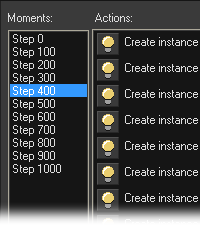
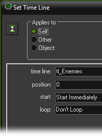

Tutorial
Page 12 of 13
Using TimeLines
In this section and the next we will discuss two further features of GameMaker that are very useful when creating more complicated scrolling shooters: time lines and views.
In the game we created so far, the appearing of enemies was controlled by the controller_enemy object which from time to time added an enemy plane to the game.
Also, enemy planes where never destroyed. They just reappeared. The result was a game that got increasingly more difficult because the number of planes got larger and larger.
Even though this gives reasonable game play it has a number of problems. First of all, the planes appear at random positions that the game designer cannot control. As a result
planes might end up on top of each other or very close to the boundary which is not very appealing. Also, there is little surprise in the game. Enemies just come at you in random
ways and there is little else the player can do than just shoot all the time and avoid them.
To get more interesting game play the game designer should have more control over which planes appear where at what moment. This allows you to create enemy planes that
come in formations, to create certain challenges (like a massive group of simple enemies that should primarily be avoided or a few dangerous enemies that better be shot) and
variation.
Also it will enable the player to learn how to play the game because he might remember useful things from previous plays. All good games control the enemies rather precisely for
the reasons described above. Simply put, it results in more interesting game play.
So we want to better control the appearance of certain enemies. To this end we will use the time line resources. But first of all we have to make some small changes to the game.
For all enemy planes we no longer make them reappear when the got shot or leave the screen. We simply destroy them. So once a plane is gone it is gone forever. The time line will
control the creation of the enemies.
A time line resource globally works as follows. In it you specify a number of moments of time (measured in steps of the game) and for each such moment you can indicate actions
that must be executed at that particular moment. Because we will use the time line for the enemy planes we will only use actions to create enemy planes but in general you can
use any actions you like.
So let us create our time line. Choose Add time line from the Add menu. A form will appear that looks partially similar to the object form. At the left you can
indicate the name of the time line and there are buttons to add, delete and manipulate time moments.
In the middle you see the list of defined moments. Next to this list there is the list of actions for the currently selected moment and at the right there are the tabbed pages from
which you can choose the actions.
At moment 0 we want to create an enemy plane. So click on the button Add. As moment indicate the value 0. The moment is added to the list. Now you can drag action
to the action list. We need just one action to create an enemy plane at the appropriate place.
As it takes about 100 steps for an enemy plane to traverse the room, we add a second moment at step 100. Here we create two enemy planes next to each other. In this way we
continue. We add moments and add creation actions for enemy planes. By creating the planes at different heights above the room we can create nice formations. So after adding a
number of moments the form will look as follows:

At the indicated moment 400 we create a row of 9 enemy planes, two of which are shooting bullets (obj_enemy2). You should by now get the idea. Just keep on adding moments
with more and more dangerous planes in interesting formations and maybe put the moments closer together.
It will take a bit of work to create a complete sequence of moments that make up a nice level of the game. In a full game you will use different time lines for different levels.
At the end of the sequence you need to add a moment that ends the level or the game. Here you should probably display a message that you finished the level or, better, have some
nice ending sequence, like an aircraft carrier appearing on which your plane lands.
We are not done yet. A time line does not automatically execute the actions! You must assign a time line to an object and then the actions of the time line will be executed for that
object. There are two special actions for this; one to set the time line for an object and a second one to set the position in the time line. We use the controller_enemy
object again.
It only needs one action in its creation event that sets the appropriate time line. We want it to start immediately at position 0 and we do not want it to loop so you do not need to
change any of the other properties.

This is all. As you will notice, using time lines is a bit more work because you need to specify all enemy planes that appear but it gives a lot of flexibility and makes the game a lot
more interesting. There are many things you can do with time lines.
Here we used them to control the global flow of the game but you can also use them to control the behavior of game objects over time. There are also many tricks you can use. For
example, to halt a time line for a while, add a moment in which you test some condition and, if so, set the time line position relative to -1, that is, in the next step the same moment is
happening and the condition is tested again.
So the time line won’t progress until the condition is false. (There is also an action to pause a timeline.) Instances can also change time lines based on certain events, etc. Also you
can control the speed of a time line. So time lines form a powerful resource.